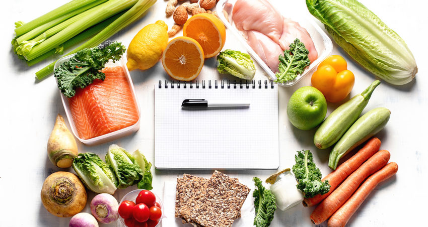

A Recipe Recommender to Reduce Food Waste
Reduce Waste With Every Meal
Discover recipes based on what you already have in your kitchen. Tinira ni Benny helps you reduce food waste by suggesting delicious meals from your leftover ingredients.
Our smart recommender system tailors recipes to your dietary preferences and available ingredients, ensuring that nothing goes to waste. Join us in our mission to save the planet, one meal at a time.


Personalized to Your Taste
Not only does Tinira ni Benny help you reduce waste, but it also learns your taste preferences for personalized recipe recommendations.
Whether you're a vegan, keto enthusiast, or someone with dietary restrictions, our app ensures that you'll only get recipes that fit your lifestyle. Start exploring now and transform your leftover ingredients into culinary delights.